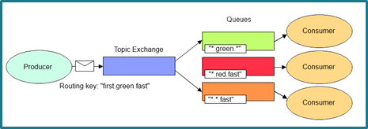
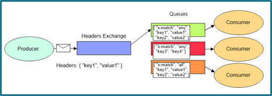

RabbitMQ
RabbitMQ는 메시지 브로커 중의 하나이며, AMQP(Advanced Message Queuing Protocol)을 사용한다.
설치
-
ERLANG 설치. OS 환경에 맞는 설치 파일을 사용 한다.
-
ERLANG 환경 변수 등록
-
변수 이름 : ERLANG_HOME
-
경로 : ERLANG이 설치된 경로(ex. C:\Program Files\erl7.0)
-
-
RabbitMQ 설치
-
RabbitMQ Management Plugin 설치
-
cmd를 이용하여 RabbitMQ가 설치된 경로의 sbin 폴더로 이동
- Ex) cd C:\Program Files (x86)\RabbitMQ Server\rabbitmq_server-3.5.4\sbin
-
rabbitmq-plugins.bat enable rabbitmq_management 입력
-
rabbitmq server 재 시작
-
인터넷 브라우저 주소창에 http://localhost:15672/ 로 접속
- ID : guest
- Pass : guest
-
기본 정보
RabbitMQ 용어 정리
-
Producer : 메시지를 보내는 주체
-
Consumer : Producer가 보내는 메시지를 받는 주체
-
Exchange : Produer가 보내는 메시지를 Queue로 전달해 주는 역할을 수행. 어떤 Type의 Exchange를 사용하는지에 따라 특정 대상의 Queue 혹은 다수의 Queue에 메시지를 전달할지 결정한다.
Exchange Type
- Direct Exchange : 같은 Routing Key를 가지고 있는 큐에 메시지를 전달.

- Fanout Exchange : Exchange에 바인딩된 모든 큐에 메시지 전달.

- Topic Exchange : Routing Key가 일치하는 큐메 메시지 전달. '*'. '#'을 이용해 Routing Key를 작성 한다.

- Header Exchange : Header와 일치하는 큐에 메시지를 전달

Hello World
- "Hello World" Message 전송
using System;
using RabbitMQ.Client;
using System.Text;
class Send
{
public static void Main()
{
var factory = new ConnectionFactory() { HostName = "localhost" };
using(var connection = factory.CreateConnection())
using(var channel = connection.CreateModel())
{
channel.QueueDeclare(queue: "hello",
durable: false,
exclusive: false,
autoDelete: false,
arguments: null);
string message = "Hello World!";
var body = Encoding.UTF8.GetBytes(message);
channel.BasicPublish(exchange: "",
routingKey: "hello",
basicProperties: null,
body: body);
Console.WriteLine(" [x] Sent {0}", message);
}
Console.WriteLine(" Press [enter] to exit.");
Console.ReadLine();
}
}
- Message 수신
using RabbitMQ.Client;
using RabbitMQ.Client.Events;
using System;
using System.Text;
class Receive
{
public static void Main()
{
var factory = new ConnectionFactory() { HostName = "localhost" };
using(var connection = factory.CreateConnection())
using(var channel = connection.CreateModel())
{
channel.QueueDeclare(queue: "hello",
durable: false,
exclusive: false,
autoDelete: false,
arguments: null);
var consumer = new EventingBasicConsumer(channel);
consumer.Received += (model, ea) =>
{
var body = ea.Body;
var message = Encoding.UTF8.GetString(body);
Console.WriteLine(" [x] Received {0}", message);
};
channel.BasicConsume(queue: "hello",
noAck: true,
consumer: consumer);
Console.WriteLine(" Press [enter] to exit.");
Console.ReadLine();
}
}
}